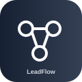

Capture, qualify and control sales lead follow-up so new opportunities do not disappear inside inboxes, forms or call notes.
Built for: Sales teams, contractors, clinics and dealerships
Run working demoView all demos
Capture, qualify and control sales lead follow-up so new opportunities do not disappear inside inboxes, forms or call notes.
Capture lead → check qualification → flag missed follow-up → prepare next action
Keep the software you already use. DealSpark is designed to connect to:
Status: connector authorization/testing is required before a customer account is marked production-connected.
This demo uses sample data only. Live integrations and customer onboarding are not yet certified.
Demo only — not available for purchase. Paid access will reopen after live integrations and onboarding pass end-to-end tests.
Sample data only. Click to run the approval workflow.